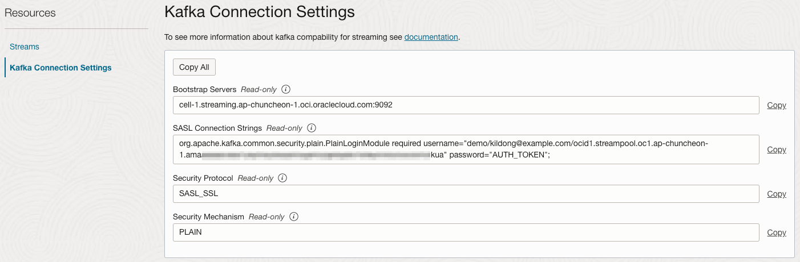
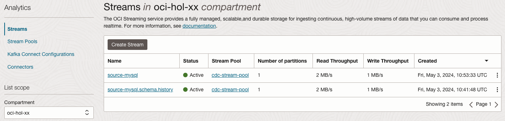
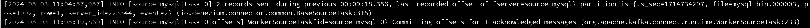
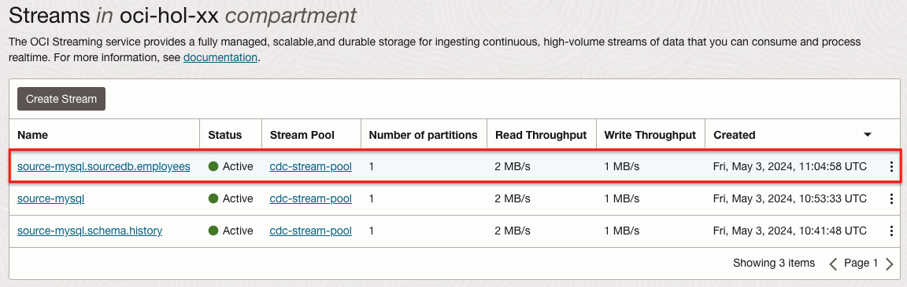
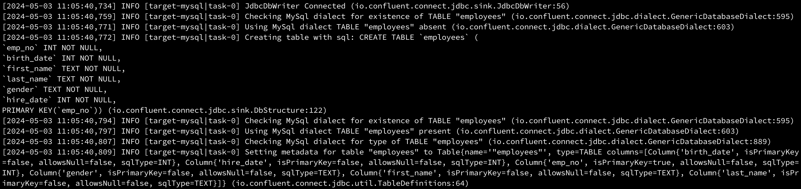

17.2 Kafka Connect, Debezium로 MySQL CDC 구성하기
Kafka에서 Debezium Connector를 통해 데이터 변경분 캡쳐(CDC)를 수행하고, JDBC Connector를 통해 대상 시스템에 동기화는 것을 구현하는 경우가 있습니다. 여기서는 Kafka를 대신하여 Kafka 호환 서비스인 OCI Streaming을 사용할 수 있는 지, 사용시 유의사항이 있는 지를 확인해 보고자 합니다. 그래서 여기서는 Kafka에 대한 자세한 설명보다는 OCI Streaming로 가능 여부 확인에 우선합니다.
Source MySQL -> Debezium Connector -> OCI Streaming -> JDBC Connector -> Target MySQL 구성으로 CDC를 구성하도록 하겠습니다.
먼저 볼 것
OCI Streaming - Kafka Connect, Debezium로 PostgreSQL CDC 구성하기을 먼저 본 것을 전제로 합니다.
Source, Target MySQL 데이터베이스 구성
먼저, Source, Target으로 사용할 MySQL 데이터베이스 인스턴스를 만듭니다. 설치 편의상 debezium에서 제공하는 컨테이너 이미지를 사용하여, OCI Container Instance 서비스로 사용할 환경을 만듭니다.
Source MySQL 생성 정보
-
OCI 콘솔에 로그인합니다.
-
좌측 상단 햄버거 메뉴에서 Developer Services > Containers & Artifacts > Container Instances 로 이동합니다.
-
아래 정보로 Container Instance를 생성합니다.
- Name: mysql-source
- Networking: 편의상 Public Subnet 사용
- 컨테이너 이미지
- Registry hostname:
docker.io - Repository:
debezium/example-mysql - Tag:
2.7
- Registry hostname:
- 환경 변수
MYSQL_ROOT_PASSWORD=password123MYSQL_USER=mysqluserMYSQL_PASSWORD=password123MYSQL_DATABASE=sourcedb
- 고급 옵션
- Startup options > Command arguments에 다음 추가
--default-authentication-plugin=mysql_native_password
- Startup options > Command arguments에 다음 추가
-
Security List Ingress 규칙에 3306 포트를 개방합니다.
Target MySQL 생성 정보
- 아래 항목만 달리하여 Container Instance를 하나 더 만듭니다.
- Name: mysql-target
- 환경 변수
MYSQL_DATABASE=targetdb
mysql client 설치
MySQL에 접속한 툴로 mysql client를 설치합니다.
-
Mac 기준
brew install mysql-client echo 'export PATH="/opt/homebrew/opt/mysql-client/bin:$PATH"' >> ~/.zshrc source ~/.zshrc # 확인 mysql --version -
Oracle Linux 8
sudo dnf install -y mysql # 확인 mysql --version
Source DB에 CDC 관련 권한 설정
-
root로 MySQL에 접속
mysql --host <Source-MySQL-Public-IP> -u root --password=password123 -
복제를 위한 권한 mysqluser 유저에 설정
GRANT SELECT, RELOAD, SHOW DATABASES, LOCK TABLES, REPLICATION SLAVE, REPLICATION CLIENT ON *.* TO 'mysqluser'@'%';
Source DB에 CDC 대상 테이블 생성
-
mysqluser 로 접속
mysql --host <Source-MySQL-Public-IP> -u mysqluser --password=password123 -
샘플 테이블 생성
use sourcedb; create table employees ( emp_no int not null, birth_date date not null, first_name varchar(14) not null, last_name varchar(16) not null, gender enum ('M','F') not null, hire_date date not null, primary key (emp_no) );
Target DB 접속 확인
-
mysqluser 로 접속
mysql --host <Target-MySQL-Public-IP> -u mysqluser --password=password123 -
샘플 테이블 없음을 확인합니다.
use targetdb; select * from employees;
OCI Streaming 서비스 구성 및 연결 준비
OCI Streaming - Kafka Connect, Debezium로 PostgreSQL CDC 구성하기과 동일합니다.
Kafka Connect 설치 및 구성
Kafka 및 Connector 설치
OCI Streaming - Kafka Connect, Debezium로 PostgreSQL CDC 구성하기과 동일합니다.
MySQL 관련 Connector 설치
-
Source DB에 CDC를 위한 Debezium MySQL Connector 2.x 버전을 설치합니다.
wget https://repo1.maven.org/maven2/io/debezium/debezium-connector-mysql/2.6.1.Final/debezium-connector-mysql-2.6.1.Final-plugin.tar.gz tar zxvf debezium-connector-mysql-2.6.1.Final-plugin.tar.gz -C ./kafka/plugins/ -
JDBC Connector에서 사용할 MySQL JDBC Driver를 설치합니다.
wget https://dev.mysql.com/get/Downloads/Connector-J/mysql-connector-j-8.4.0.tar.gz tar xvzfp mysql-connector-j-8.4.0.tar.gz */*.jar cp mysql-connector-j-8.4.0/mysql-connector-j-8.4.0.jar ./kafka/plugins/confluentinc-kafka-connect-jdbc-10.7.6/lib/ -
Connector 설치를 확인합니다.
$ ls ./kafka/plugins/ confluentinc-kafka-connect-jdbc-10.7.6 debezium-connector-mysql
Kafka Connect Properties 설정
OCI Streaming - Kafka Connect, Debezium로 PostgreSQL CDC 구성하기과 동일합니다.
Kafka Connect 실행
-
설정 파일을 사용하여 실행합니다.
./kafka/bin/connect-distributed.sh connect-distributed.properties
Source DB 연결을 위한 Debezium Connector 설정
-
Source DB 연결을 위한 설정 파일(connector-source-mysql.json)을 만듭니다.
{ "name": "source-mysql", "config": { "connector.class": "io.debezium.connector.mysql.MySqlConnector", "tasks.max": "1", "database.hostname": "xxx.xx.xx.xxx", "database.port": "3306", "database.user": "mysqluser", "database.password": "password123", "database.server.id":"223344", "database.server.name": "source-mysql", "database.ssl.mode": "preferred", "snapshot.mode": "never", "tombstones.on.delete": "false", "include.query": "false", "topic.prefix": "source-mysql", "database.include.list": "sourcedb", "time.precision.mode": "connect", "schema.history.internal.kafka.bootstrap.servers": "cell-1.streaming.${REGION}.oci.oraclecloud.com:9092", "schema.history.internal.kafka.topic": "source-mysql.schema.history", "include.schema.changes": "true", "schema.history.internal.skip.unparseable.ddl": "true", "schema.history.internal.producer.security.protocol": "SASL_SSL", "schema.history.internal.producer.sasl.mechanism": "PLAIN", "schema.history.internal.producer.sasl.jaas.config": "org.apache.kafka.common.security.plain.PlainLoginModule required username=\"${TENANCY_NAME}/${USER_NAME}/${STREAM_POOL_OCID}\" password=\"${AUTH_TOKEN}\";", "schema.history.internal.producer.ssl.endpoint.identification.algorithm": "https", "schema.history.internal.consumer.security.protocol": "SASL_SSL", "schema.history.internal.consumer.sasl.mechanism": "PLAIN", "schema.history.internal.consumer.sasl.jaas.config": "org.apache.kafka.common.security.plain.PlainLoginModule required username=\"${TENANCY_NAME}/${USER_NAME}/${STREAM_POOL_OCID}\" password=\"${AUTH_TOKEN}\";", "schema.history.internal.consumer.ssl.endpoint.identification.algorithm": "https" } }-
database.hostname: Source DB의 IP
-
database.user: DB 접속 유저명
-
database.password: 유저 패스워드
-
database.dbname : 앞서 CREATE DATABASE 명령으로 만든 Source DB상의 DATABASE 이름
-
topic.prefix: OCI Streaming에 만들어질 Topic들의 Prefix
- 예, source-mysql
- employees 테이블의 변경분은 ${topic.prefix}.${DATABASE_NAME}.${TABLE_NAME} 형식으로 source-mysql.sourcedb.employees 이름으로 Topic이 만들어지게 됨
-
database.include.list: Source MySQL에서 바라볼 데이터베이스 지정
-
time.precision.mode: connect: date/time/datetime 포맷 변환을 위해 필요, 하지 않을 경우, birth_date: ‘1953-09-02’가 Target에서는 -5965처럼될 수 있습니다.
-
schema.history.internal
- kafka.bootstrap.servers: Kafka Connection Settings의 Bootstrap Servers 값 사용
- *.sasl.jaas.config: Kafka Connection Settings의 SASL Connection Strings 값에서 AUTH_TOKEN만 변경하여 사용, 이중 따옴표라
\"을 주의합니다.

-
-
설정 파일을 사용해 Source DB를 위한 Connector를 배포합니다.
curl --location --request POST 'http://localhost:8083/connectors' --header 'Content-Type: application/json' --data '@connector-source-mysql.json' -
현재 배포된 Connector를 조회합니다.
curl localhost:8083/connectors | jq -
필요시 삭제후 설정 파일 변경후 다시 배포합니다.
curl --location --request DELETE 'http://localhost:8083/connectors/source-mysql' -
Connector를 배포하면 “schema.history.internal.kafka.topic"으로 지정한 이름으로 자동생성이 시도되는데, Kafka Connect 로그에서 다음과 같은 오류가 발생합니다.
Caused by: java.util.concurrent.ExecutionException: org.apache.kafka.common.errors.UnsupportedVersionException: Creating topics with default partitions/replication factor are only supported in CreateTopicRequest version 4+. The following topics need values for partitions and replicas: [source-mysql.schema.history]-
해당 Topic 생성시 partitions/replication factor 설정 항목을 알수 없어, 일단 OCI 콘솔에서 직접 생성해 줍니다.
-
Stream Name: source-mysql.schema.history
-
Stream Pool: my-stream-pool
-
Number of Partitions: 1
-
-
Target DB 연결을 위한 JDBC Sink Connector 설정
-
Target DB 연결을 위한 설정 파일(connector-target-mysql.json)을 만듭니다.
{ "name": "target-mysql", "config": { "connector.class": "io.confluent.connect.jdbc.JdbcSinkConnector", "tasks.max": "1", "connection.url": "jdbc:mysql://xxx.xx.xxx.xx:3306/targetdb", "connection.user": "mysqluser", "connection.password": "password123", "topics.regex": "source-mysql.sourcedb.(.*)", "table.name.format":"${topic}", "auto.create": "true", "auto.evolve": "true", "delete.enabled": "true", "insert.mode": "upsert", "pk.mode": "record_key", "key.converter": "org.apache.kafka.connect.json.JsonConverter", "key.converter.schemas.enable": "true", "value.converter": "org.apache.kafka.connect.json.JsonConverter", "value.converter.schemas.enable": "true", "transforms": "unwrap, route", "transforms.unwrap.type": "io.debezium.transforms.ExtractNewRecordState", "transforms.unwrap.drop.tombstones": "false", "transforms.unwrap.delete.handling.mode": "none", "transforms.route.type": "org.apache.kafka.connect.transforms.RegexRouter", "transforms.route.regex": "([^.]+)\\.([^.]+)\\.([^.]+)", "transforms.route.replacement": "$3" } }- connection.url: Target DB 접속을 위한 JDBC URL 입력
- connection.user: DB 접속 유저명
- connection.password: 유저 패스워드
- topics.regex: Source DB에서 여러 테이블의 변경분을 가져오는 경우를 고려해, 정규식으로 입력
- 예시, ${topic.prefix}.${DATABASE_NAME}.${TABLE_NAME} 형식으로 source-mysql.sourcedb.employees
- table.name.format: Target DB에 만들 테이블 이름 형식, ${topic}으로 하면 실제 앞 부분이 제외되고 테이블 이름을 가져옮, 예, employees
- auto.create: Target DB에 해당 테이블이 없을 경우, 자동으로 만들지 여부 지정
- auto.evolve: Target DB에 해당 테이블과 스키마가 다를 경우, 자동으로 반영할 지 여부 지넝
- delete.enabled: Target DB에 해당 테이블 삭제 가능 여부 지정
- transform.route: topic 이름이 source-mysql.sourcedb.employees인 경우, table.name을 고정값으로 하지 않고, “table.name.format”:"${topic}“게 하면, 버그 인지
.employees처럼.이 붙어, Target DB에 SQL를 날려, 쿼리 오류가 발생합니다. transform.route을 통해서 앞 부분을 자르고 세번째 테이블이름만으로 라우팅되게 합니다.
-
설정 파일을 사용해 Target DB를 위한 Connector를 배포합니다.
curl --location --request POST 'http://localhost:8083/connectors' --header 'Content-Type: application/json' --data '@connector-target-mysql.json' -
현재 배포된 Connector를 조회합니다.
curl localhost:8083/connectors | jq -
필요시 삭제후 설정 파일 변경후 다시 배포합니다.
curl --location --request DELETE 'http://localhost:8083/connectors/target-mysql' -
OCI 콘솔에서 Streams 목록을 확인해 보면, 새로 Topic 생성된 것을 확인할 수 있습니다.

CDC 테스트
Source DB에 데이터 변경분 발생
-
데이터베이스 접속
mysql --host <Source-MySQL-Public-IP> -u mysqluser --password=password123 -
DATABASE 선택
use sourcedb; -
새 데이터 삽입
INSERT INTO employees VALUES (10001,'1953-09-02','Georgi','Facello','M','1986-06-26'); -
데이터를 확인합니다.
mysql> select * from employees; +--------+------------+------------+-----------+--------+------------+ | emp_no | birth_date | first_name | last_name | gender | hire_date | +--------+------------+------------+-----------+--------+------------+ | 10001 | 1953-09-02 | Georgi | Facello | M | 1986-06-26 | +--------+------------+------------+-----------+--------+------------+ 1 row in set (0.00 sec) -
Kafka Connect 로그에 다음과 같이 로그가 발생합니다.

-
그리고 OCI 콘솔에서 확인해 보면, 테이블에 해당하는 Topic이 추가로 생성됩니다.

Target DB에 데이터 확인
-
데이터베이스 접속
mysql --host <Target-MySQL-Public-IP> -u mysqluser --password=password123 -
DATABASE 접속
use targetdb; -
현재 데이터 확인합니다. 테이블이 생성되고 데이터가 들어간 것을 확인할 수 있습니다.
mysql> select * from employees; +--------+------------+------------+-----------+--------+------------+ | emp_no | birth_date | first_name | last_name | gender | hire_date | +--------+------------+------------+-----------+--------+------------+ | 10001 | 1953-09-02 | Georgi | Facello | M | 1986-06-26 | +--------+------------+------------+-----------+--------+------------+ 1 row in set (0.00 sec) mysql> -
Target DB에 동일 테이블이 생성되고 데이터도 동기화되었습니다.
Kafka Connect 로그 확인
Kafka Connect의 실행로그를 확인하면, 아래와 같이 변경분이 확인하고, Target DB에 테이블이 없음을 확인하고 생성했다는 로그를 확인할 수 있습니다. 또한 변경분을 전달했다는 메시지도 확인할 수 있습니다.

connect-distributed.properties에서 OCI Streaming에서 사용하는 연결방식만 사용하면, 기존 Kafka들 대체하여, Kafka Connect, Connector 플러그인들을 활용하여 CDC를 수행할 수 있는 것을 확인하였습니다.
추가 참고사항
-
PacketTooBigException
Caused by: java.sql.SQLException: Exception chain: com.mysql.cj.jdbc.exceptions.PacketTooBigException: Packet for query is too large (5,673 > 2,048). You can change this value on the server by setting the 'max_allowed_packet' variable. at io.confluent.connect.jdbc.sink.JdbcSinkTask.getAllMessagesException(JdbcSinkTask.java:165) at io.confluent.connect.jdbc.sink.JdbcSinkTask.put(JdbcSinkTask.java:111) ... 12 more-
방안
mysql> show variables where Variable_name = 'max_allowed_packet'; +--------------------+-------+ | Variable_name | Value | +--------------------+-------+ | max_allowed_packet | 2048 | +--------------------+-------+ 1 row in set (0.00 sec) mysql> SET GLOBAL max_allowed_packet = 8192; Query OK, 0 rows affected (0.00 sec) mysql> FLUSH PRIVILEGES; Query OK, 0 rows affected (0.00 sec) mysql> exit Bye 재접속 mysql> show variables where Variable_name = 'max_allowed_packet'; +--------------------+-------+ | Variable_name | Value | +--------------------+-------+ | max_allowed_packet | 8192 | +--------------------+-------+ 1 row in set (0.00 sec) mysql>
-
이 글은 개인으로서, 개인의 시간을 할애하여 작성된 글입니다. 글의 내용에 오류가 있을 수 있으며, 글 속의 의견은 개인적인 의견입니다.